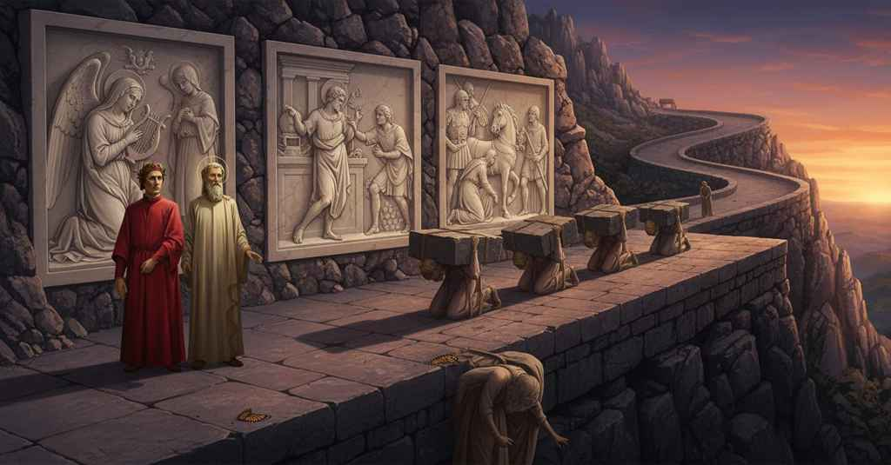

Purgatorio — Canto 10

Riassunto Summary 要約
Saliti sulla prima cornice del Purgatorio, Dante e Virgilio ammirano i bassorilievi divinamente scolpiti che raffigurano esempi di umiltà, prima di incontrare i superbi che scontano la loro pena schiacciati sotto pesanti massi.
Having climbed to the first terrace of Purgatory, Dante and Virgil admire divinely sculpted bas-reliefs depicting examples of humility before encountering the proud, who atone for their sin crushed beneath heavy stones.
煉獄の第一環道に登ったダンテとウェルギリウスは、謙遜の模範を描いた神の手による浅浮き彫りに感嘆し、その後、重い岩に押しつぶされて罰を受ける傲慢者たちに出会う。
Segmento 1 1–27
Una volta varcata la soglia, la porta del Purgatorio si richiude fragorosamente alle spalle di Dante, che riflette sull'impossibilità di perdonare chi si volta indietro. Lui e Virgilio iniziano a salire attraverso una stretta fessura nella roccia, che si muove come un'onda e li costringe a un lento procedere a zig-zag. L'ascesa è così ardua che trascorrono diverse ore prima che escano da quella "cruna". Stanchi e incerti sulla via, si fermano su un pianoro solitario, la prima cornice del Purgatorio. Questo terrazzo è largo quanto tre corpi umani, stretto tra il vuoto da un lato e l'alta parete del monte dall'altro.
Once through the threshold, the gate of Purgatory slams shut thunderously behind Dante, who reflects on the impossibility of forgiveness for one who looks back. He and Virgil begin to climb through a narrow fissure in the rock, which moves like a wave and forces them into a slow, zig-zagging ascent. The climb is so arduous that several hours pass before they emerge from that "needle's eye." Tired and uncertain of the way, they stop on a solitary level place, the first terrace of Purgatory. This terrace is as wide as three human bodies, set between the void on one side and the high wall of the mountain on the other.
門をくぐると、煉獄の門がダンテの背後で轟音を立てて閉まり、彼は振り返る者は許されないことを思う。彼とウェルギリウスは、波のように揺れ動く狭い岩の裂け目を登り始め、ゆっくりとジグザグに進むことを余儀なくされる。その登りは非常に困難で、彼らがその「針の穴」から抜け出すまでに数時間が経過する。道に疲れ、迷いながら、彼らは煉獄の第一環道である孤独な平地に立ち止まる。この環道は人間の背丈の三倍ほどの幅で、片側は虚空、もう片側は山の高い壁に挟まれている。
Segmento 2 28–99
Dante scopre che la parete interna della prima cornice è di marmo candido, adornata da bassorilievi divinamente scolpiti che superano in realismo sia l'arte umana che la natura. Essi rappresentano esempi di umiltà e sono così vivi da formare un "visibile parlare". La prima scena è l'Annunciazione alla Vergine Maria, così realistica che si giurerebbe di udire le parole "Ave" ed "Ecce ancilla Dei". Segue la storia del re Davide che danza umilmente davanti all'Arca Santa, osservato con disprezzo dalla moglie Micol. Infine, viene raffigurato l'imperatore Traiano che, mosso a pietà, interrompe una partenza militare per rendere giustizia a una povera vedova.
Dante discovers that the inner wall of the first terrace is of white marble, adorned with divinely sculpted bas-reliefs that surpass both human art and nature in their realism. They represent examples of humility and are so lifelike that they form a 'visible speech'. The first scene is the Annunciation to the Virgin Mary, so realistic one would swear they could hear the words 'Ave' and 'Ecce ancilla Dei'. Next is the story of King David dancing humbly before the Holy Ark, watched with scorn by his wife Michal. Finally, the Emperor Trajan is depicted, who, moved by pity, halts a military departure to grant justice to a poor widow.
ダンテは、第一環道の内側の壁が白い大理石でできており、人間の芸術も自然そのものも凌駕する写実性で神によって彫られた浅浮き彫りで飾られていることに気づく。それらは謙遜の模範を表しており、非常に生き生きとしているため「見える言葉」を形成している。最初の場面は聖母マリアへの受胎告知で、あまりに写実的なため「アヴェ」と「エッケ・アンチルラ・デイ」という言葉が聞こえると誓ってしまいそうなほどである。次に、妻ミカルに軽蔑の目で見られながら、聖櫃の前で謙虚に踊るダヴィデ王の物語が続く。最後に、憐れみを感じて、貧しい寡婦に正義を授けるために軍の出立を中断するトラヤヌス帝が描かれている。
Segmento 3 100–139
Virgilio indica a Dante un gruppo di anime che si muovono lentamente e che li indirizzeranno. Sono i superbi, schiacciati a terra dal peso di grandi massi che li rendono quasi irriconoscibili. Il narratore si rivolge direttamente al lettore, esortandolo a non perdersi d'animo di fronte alla punizione divina, e poi apostrofa l'umanità superba, paragonata a 'vermi' che non riescono a diventare l''angelica farfalla' dell'anima perfetta. La postura curva dei peccatori è paragonata a quella di una figura scolpita usata come mensola, piegata in due sotto un grande peso. La loro sofferenza è così intensa che anche il più paziente tra loro sembra gridare in lacrime: 'Più non posso'.
Virgil points out to Dante a group of souls who are moving slowly and will direct them. They are the proud, crushed to the ground by the weight of large stones that make them almost unrecognizable. The narrator speaks directly to the reader, urging them not to lose heart in the face of divine punishment, and then addresses proud humanity, compared to 'worms' that fail to become the 'angelic butterfly' of the perfected soul. The curved posture of the sinners is compared to that of a sculpted figure used as a corbel, bent in two under a great weight. Their suffering is so intense that even the most patient among them seems to cry out in tears: 'I can take no more.'
ウェルギリウスは、ゆっくりと動き、二人を導いてくれるであろう魂の一群をダンテに示す。彼らは傲慢者であり、巨大な岩の重みで地面に押しつぶされ、ほとんど見分けがつかないほどになっている。語り手は読者に直接語りかけ、神の罰を前に落胆しないように促し、次いで、完成された魂である「天使の蝶」になることに失敗した「蛆虫」にたとえられる傲慢な人類に呼びかける。罪人たちの屈んだ姿勢は、大きな重みの下で二つに折れ曲がり、持ち送りとして使われる彫像のそれにたとえられる。彼らの苦しみは非常に激しく、最も忍耐強い者でさえ、涙ながらに『もう耐えられない』と叫んでいるように見える。